Le comportement viscoélastique traduit la réponse mécanique résultant de la combinaison des propriétés élastiques des solides et visqueuses des fluides. Dans ce TP, nous avons étudié ce comportement à travers des essais réalisés sur une aube de turboréacteur, afin d'analyser l'évolution des déformations en fonction de l'historique du chargement appliqué.
L'identification de ce type de comportement repose sur deux essais mécaniques spécifiques :
Essai de relaxation
Imposition d'une déformation constante — observation de l'évolution de la contrainte au cours du temps.
Essai de fluage
Application d'une contrainte constante — observation de l'évolution de la déformation au cours du temps.
Ce comportement est observé dans divers matériaux tels que les polymères synthétiques, le polyéthylène ou les résines époxy. Dans le contexte aéronautique, des matériaux viscoélastiques sont utilisés pour l'amortissement des vibrations, la répartition des contraintes et l'amélioration de la durabilité des assemblages soumis à des sollicitations cycliques — comme les aubes de turboréacteur.
02Définition du matériau — Inconel 718
Dans la rubrique Engineering Data d'ANSYS Workbench, le matériau Inconel 718 (superalliage de nickel) est créé et ses propriétés saisies en fonction de la température via drag & drop.
Propriétés de l'Inconel 718 saisies : masse volumique, coefficient de dilatation thermique sécant, module de Young, coefficient de Poisson et limite élastique — toutes en fonction de la température.
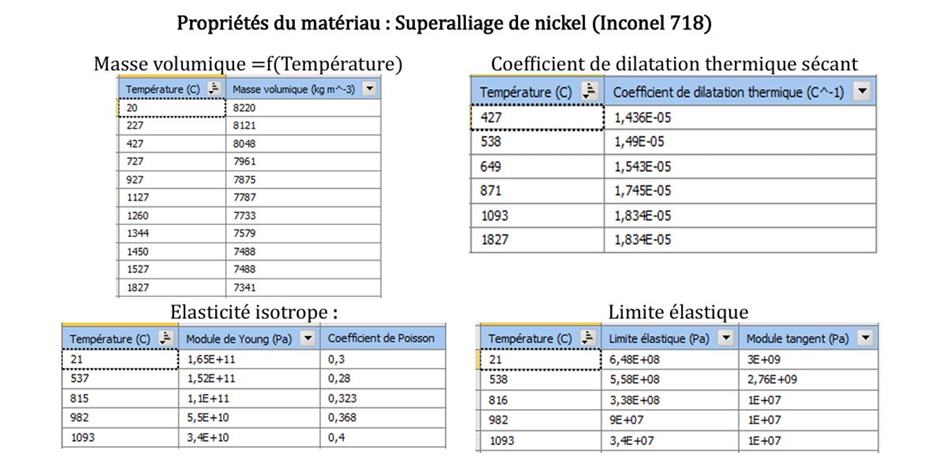
Figure 2 : Tableaux des propriétés de l'Inconel 718 en fonction de la température
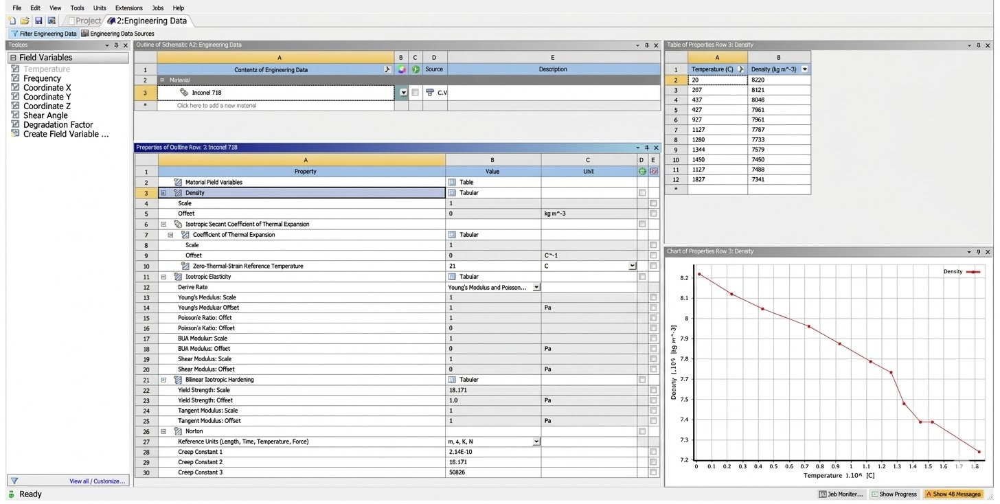
Figure 3 : Saisie des propriétés par drag & drop dans Engineering Data
Propriétés clés (Inconel 718)
Propriété
Valeur (21°C)
Évolution
Module de Young
1,69 × 1011 Pa
Décroît avec T°
Coefficient de Poisson
0,3
Variable
Limite élastique Re
648 MPa
Décroît avec T°
Masse volumique
8220 kg/m³
Décroît avec T°
03Analyse à température ambiante — Effet de la force centrifuge
L'analyse est conduite à 22°C. Un support fixe est appliqué sur la surface de pied d'aube. Avant d'insérer la vitesse de rotation, un système de coordonnées éloigné de 600 mm de l'aube est créé pour simuler l'axe de rotation du disque de turbine.
Application du Fixed Support sur les 4 faces du pied d'aube — encastrement complet.
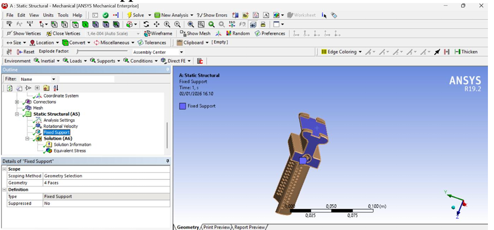
Figure 4 : Application du Fixed Support sur la surface de pied d'aube
Création de l'axe de rotation à 600 mm de l'aube pour simuler la géométrie réelle du disque de turbine.
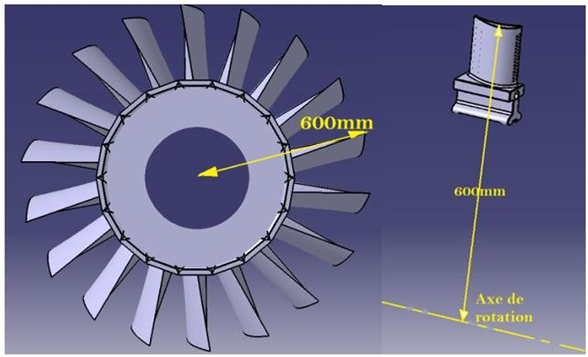
Figure 5 : Schéma de positionnement — axe de rotation à 600 mm de l'aube
Insertion du Coordinate System personnalisé pour définir l'origine de rotation.
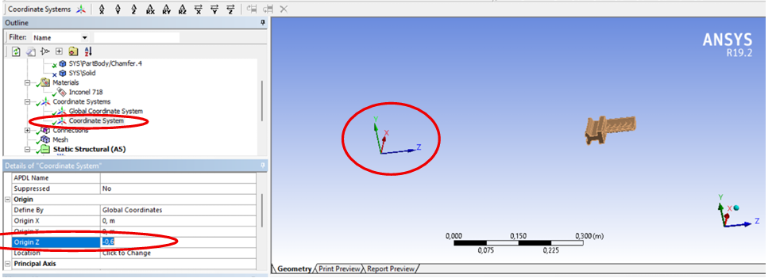
Figure 6 : Paramétrage du Coordinate System — origine décalée de 600 mm
Application de la Rotational Velocity à 10 000 RPM sur la composante X.
σmax = 803 MPa > Re = 648 MPa — Le pic de contrainte se localise au niveau des trous de refroidissement qui créent des concentrations géométriques importantes. L'ailette ne résiste pas en régime élastique.
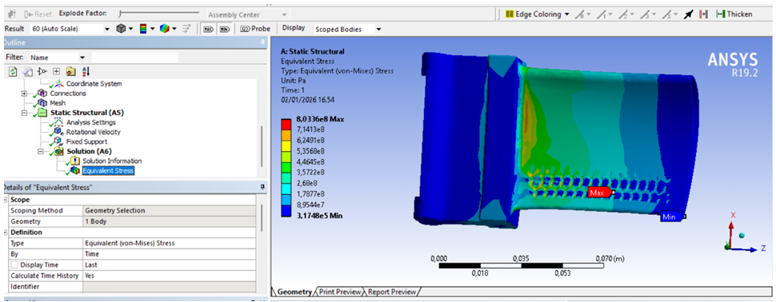
Figure 8 : Contrainte équivalente Von Mises à 10 000 RPM — σmax = 8,0336 × 108 Pa
Vue zoomée sur les trous de refroidissement — localisation précise du maximum de contrainte.
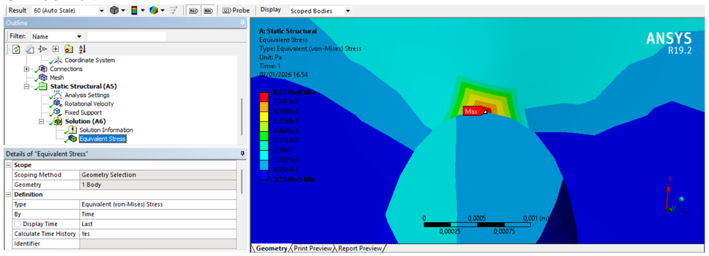
Figure 9 : Zoom sur la zone critique — trous de refroidissement (10 000 RPM)
σmax = 770 MPa — toujours au-dessus de la limite élastique (648 MPa).
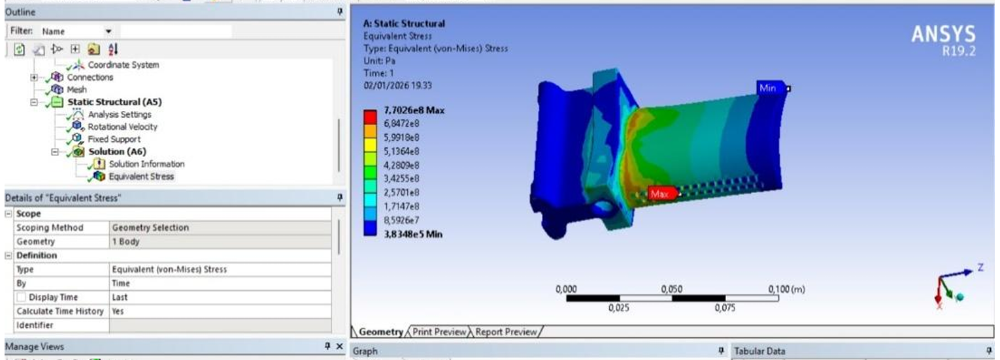
Figure 10 : Contrainte Von Mises à 11 000 RPM — σmax = 770 MPa
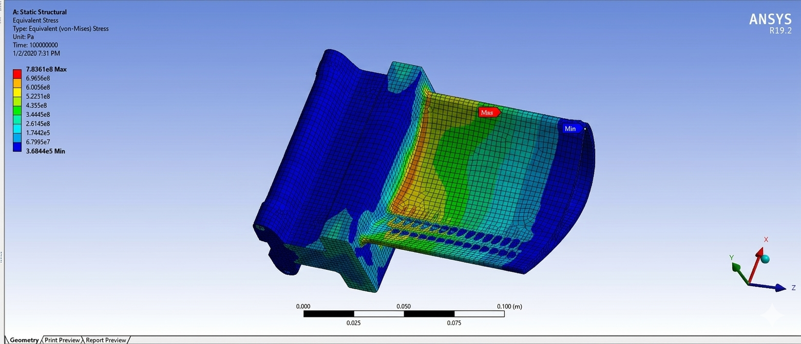
Figure 11 : Contrainte Von Mises à 12 000 RPM
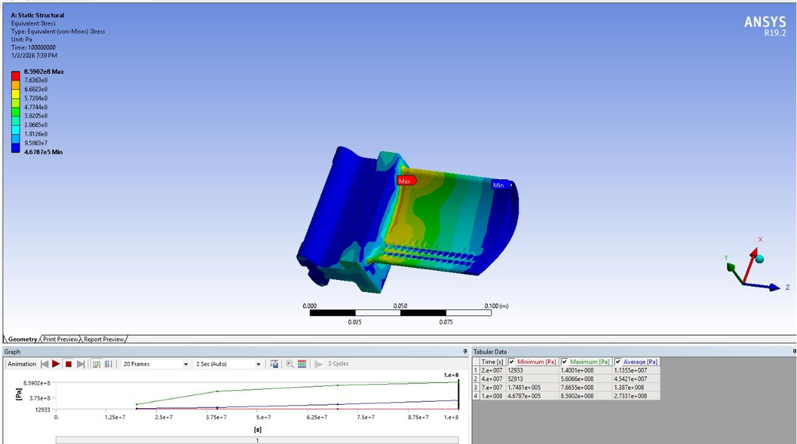
Figure 12 : Contrainte Von Mises à 13 000 RPM
À 15 000 RPM, les contraintes sont largement supérieures à la limite élastique — rupture certaine.
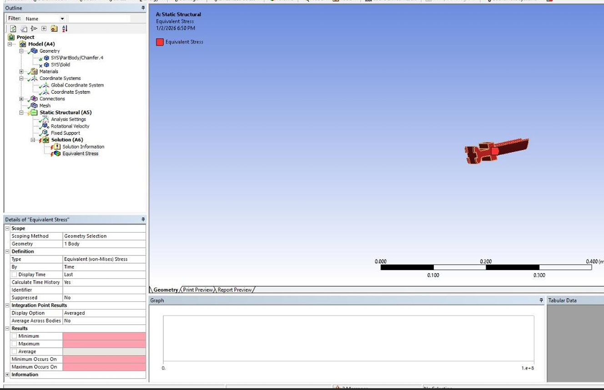
Figure 13 : Contrainte Von Mises à 15 000 RPM — rupture inévitable
σmax = 525 MPa < Re = 648 MPa — La vitesse de 5 000 RPM est la proposition de vitesse maximale pour rester dans le domaine élastique.
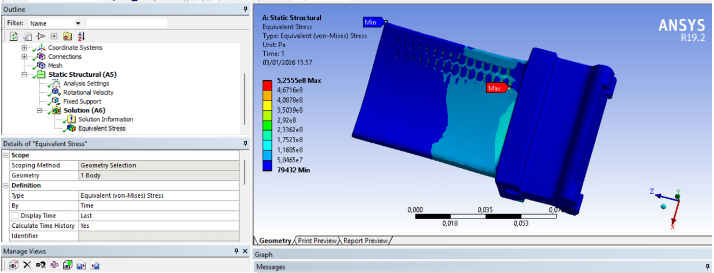
Figure 14 : Contrainte Von Mises à 5 000 RPM — σmax = 525 MPa < Re ✓
Synthèse des résultats par vitesse
Vitesse (RPM)
σmax (MPa)
vs Re = 648 MPa
Statut
5 000
525
525 < 648
✓ Domaine élastique
10 000
803
803 > 648
✗ Plastique
11 000
770
770 > 648
✗ Plastique
12 000
> 648
Dépassé
✗ Plastique
13 000
> 648
Dépassé
✗ Plastique
15 000
>> 648
Largement dépassé
✗ Rupture
⚠ Conclusion partielle : Ces résultats ne sont pas cohérents dans un scénario de service réel — la limite élastique est déjà dépassée à 10 000 RPM. Le scénario imposé mène inévitablement à la rupture. La vitesse maximale admissible en régime élastique est estimée à 5 000 RPM (σmax = 525 MPa).
04Analyse de l'effet de la température — Fluage
Les simulations thermomécaniques couplées combinent la force centrifuge (10 000 RPM) et un champ de température imposé. L'analyse révèle une sensibilité extrême au fluage à haute température.
σmax = 8,2255 × 108 Pa — Les déformations plastiques cumulées dépassent quasi-instantanément les critères de sécurité à 600°C.
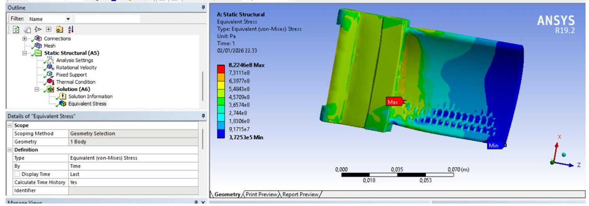
Figure 15 : Contrainte équivalente à 600°C — σmax = 8,2255 × 108 Pa
σmax = 6,9008 × 108 Pa — La contrainte décroît légèrement car le module de Young diminue avec la température, mais les déformations plastiques s'emballent.
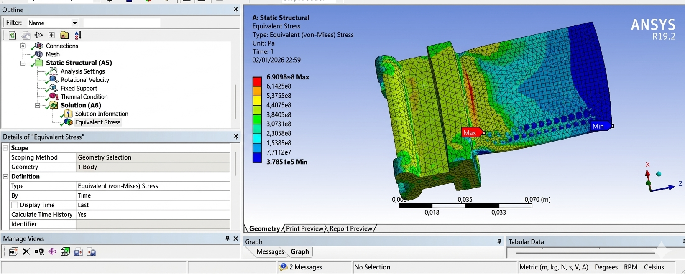
Figure 16 : Contrainte équivalente à 700°C — σmax = 6,9008 × 108 Pa
Le calcul ne converge pas. Une instabilité numérique majeure survient — le solveur échoue. L'ailette casse instantanément sous ces conditions.
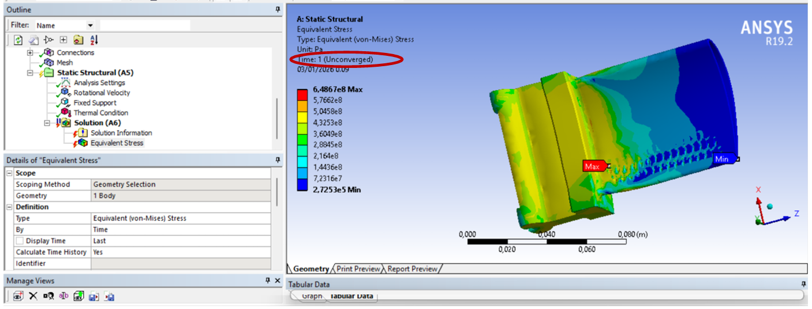
Figure 17 : Simulation à 800°C — non-convergence du solveur (Time 1 Unconverged)
Explication de la non-convergence
Au-delà de 700–800°C, le module de Young chute drastiquement (3,4 × 1010 Pa à 1093°C vs 1,69 × 1011 Pa à 21°C).
La constante de fluage C2 ≈ 10 provoque une déformation infinie (instabilité géométrique).
La combinaison contrainte initiale élevée + sensibilité extrême au fluage dépasse la capacité du solveur.
À 600°C, les déformations plastiques cumulées dépassent quasi-instantanément les critères de sécurité.
Conclusion générale
Lors des simulations thermomécaniques couplées (force centrifuge + température), une instabilité numérique majeure est observée dès que la température dépasse le seuil d'environ 700–800°C, entraînant une non-convergence du solveur.
Le couple de chargement (10 000 tr/min) et de température (> 600°C) place l'ailette bien au-delà de son domaine de résistance. La combinaison d'une contrainte initiale trop élevée et d'une sensibilité extrême au fluage (C₂ ≈ 10) provoque une déformation infinie que le logiciel ne peut plus résoudre.
La vitesse maximale admissible en régime élastique est 5 000 RPM (σmax = 525 MPa < Re = 648 MPa). L'ailette casse instantanément sous le chargement combiné (10 000 RPM + T° > 600°C).